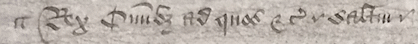

Research Question
As discussed in our History section, many copies of the Letter Patent were created, but no two manuscripts are ever quite the same. Our team's task was to create a line-by-line comparison of all of the surviving copies, called a "manuscript collation." (Click here to see our interactive comparison tool!) This manuscript collation would allow the Brecon Team to encode similarities and differences between the manuscript copies. Together with other evidence, this information allows us to determine how these manuscripts circulated among scholars and clergy in the 1700s. Additionally, this information would allow us to further complete our stemma codicum, which is a family tree of the existing manuscript copies. Currently, our online visualization of the stemma is available!
Methodology and Research Process
The beginning of our research was greatly sped up by Dr. Campbell's research assistant, Jonah Jankovich, who provided us with our original transcription that we have used as the base for our coding. With this transcription, we were able to begin the process of deciding on our encoding process.
One of the first decisions that our team came to was the decision to follow the TEI guidelines for our project. The TEI, or Text Encoding Initiative, is a set of rules that determine suitable ways to markup textual documents. These rules specify which tags are able to be used for which types of documents, as well as which attributes are able to go with those tags. Essentially, the TEI is a community-accepted language for text encoding that helps to streamline and standardized digital markup projects. This standard was crucial to our research.
Because our project involved manuscript comparisons, we decided to use the TEI critical apparatus tool for the bulk of our markup. This tool wraps any section of our document containing a textual variation between manuscripts in an <app> element. Inside of this element, it allows for reading witnesses to be coded for. These reading witnesses are indicated with <rdg> elements that have wit attributes to indicate which manuscript each variation follows.
At this point, we created an ODD for our markup. An ODD is a type of schema that customizes the TEI guidelines to fit each project. To create our ODD, we used the beta version of Roma JS, which allows the user to quickly and easily choose which TEI guidelines they want to apply to their project. This was done by deleting modules that were not relevant to the Brecon Project. Once we deleted any irrelevant modules, we saved the document as a .odd, a .html, and a .rng file. Then, we were able to begin making customizations that fit with the Brecon code. Within our ODD document, we made two notable customizations. First, we made changes that allowed for empty <rdg> tags when certain areas of text were missing from certain documents. Additionally, we specified which wit identifiers were allowed. These identifiers were single letters (or, sigla) that were specific to each manuscript, preceded by a pound symbol.
Then, to add more clarity to our encoding process, we met to decide on textual variations that we considered to be minor and/or insignificant. These included any variations between 'et' and '&', changes in punctuation, and changes in sentence structure. For our project, significant variations included changes in wording and changes to spelling of words. These decisions allowed us to add more clarity to our goals and helped us to keep our source document as clean and organized as possible.
At this point, our group got to working through our eight manuscript copies. Below is an example of what some of these manuscripts looked like:
(Here we would like to express our thanks to The National Archives for allowing us to publish this image from Witness R. We do not have permission to publish images of the other manuscripts at this time.)
During this process, we also got to work on our project website. At this stage, Team Brecon had another series of meetings, both in person and through our team's GitHub Repository, to decide on exactly how we wanted to present the variations between documents on our site. To see some of this process, click here. We ultimately decided on creating Javascript that shows the texts of up to 3 manuscripts side-by-side in the browser window. These are turned on and off with checkboxes that are visible across the top of the page. This javascript was created by student instructor Alyssa Argento, and it greatly helped the Brecon Team.
As the team finished our XML markup, we were able to create our stemma using SVG. At the same time, other members of the team were working on our SVG Timeline that works through Javascript. From here, our website started to come together. The Team began to work on enhancing the People, Glossary, and History pages of the site, as well as working on additional SVG graphs and our analysis section. At this point, Dr. Campbell was able to study the variations we had coded for and make some preliminary decisions on where the manuscripts stemmed from. With this information, he was able to work even more on enhancing our stemma. He will continue to work on this problem by examining the history of individual variants on a case-by-case basis to test the current stemma, which is a hypothesis (at least as to the relationship between witnesses CDIO).
The Brecon Project was started as part of Dr. Elisa Beshero-Bondar's Coding and Digital Archives Class, which is part of the Pitt-Greensburg Digital Humanities program. However, it is also part of ongoing research by Dr. William Campbell, and will continue to grow and evolve in the future. In the near future, he hopes to locate the Warrant in Chancery (a document that served as both the rough draft for the Letters Patent and the authorisation to issue and seal it), which probably survives in The National Archives. In the longer term, he hopes to extend this project to incorporate the Statutes of St Davids Cathedral, which appear in many of the same manuscripts. We hope that our work is able to give clarity to the foundation and movement of the Brecon Collegiate Church and School, and to provide more clarity to the documents surrounding this event. As this project is one that will continue in the future, the team invites you to check back and see what we have been working on!